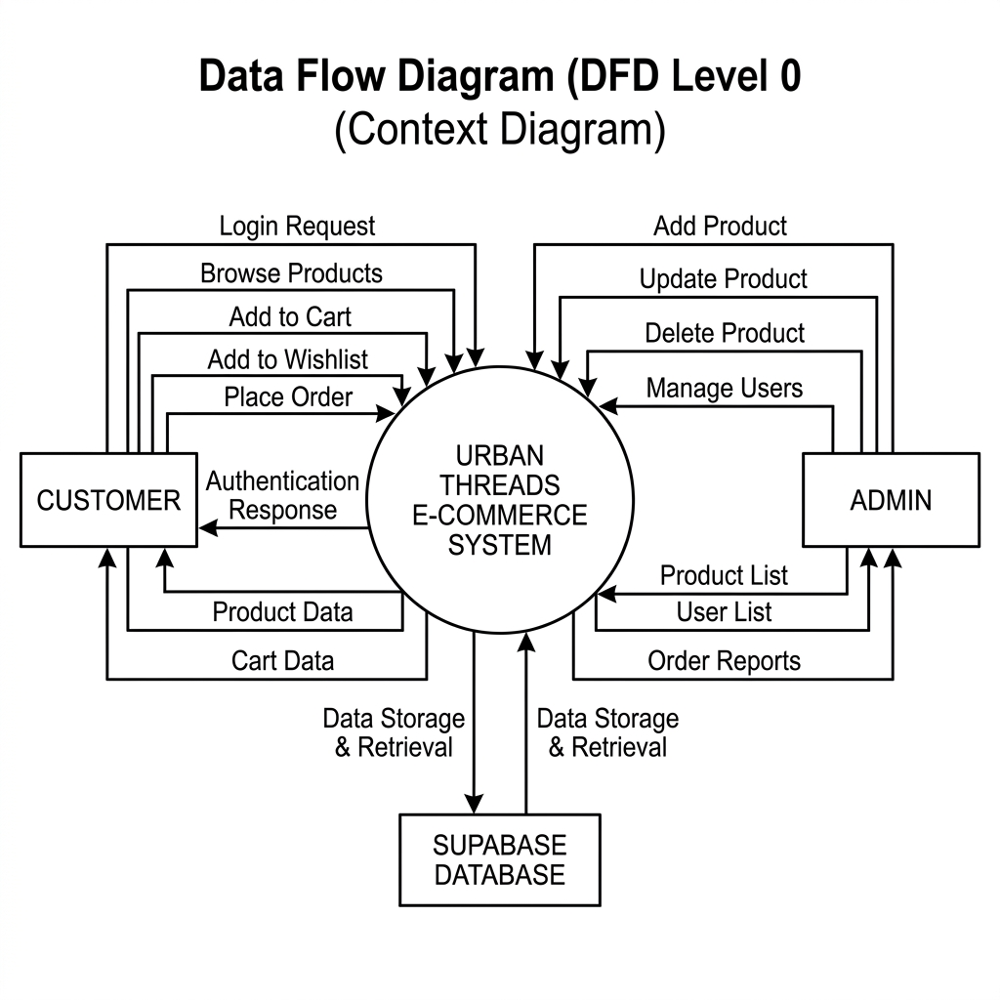
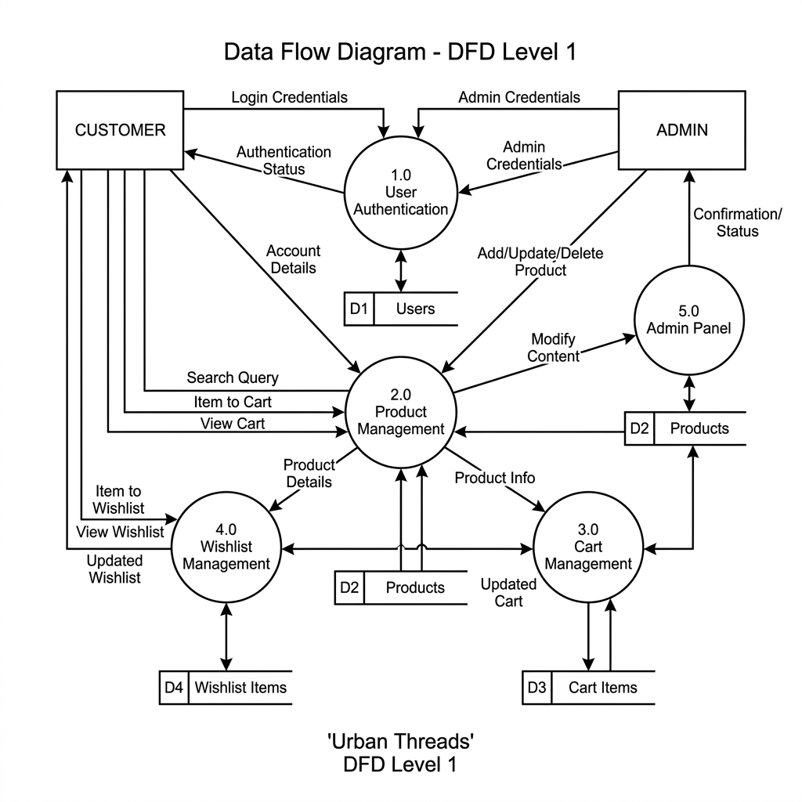
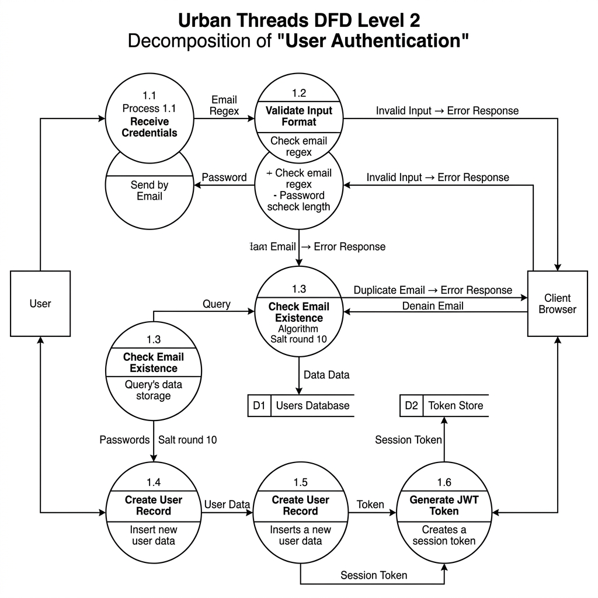
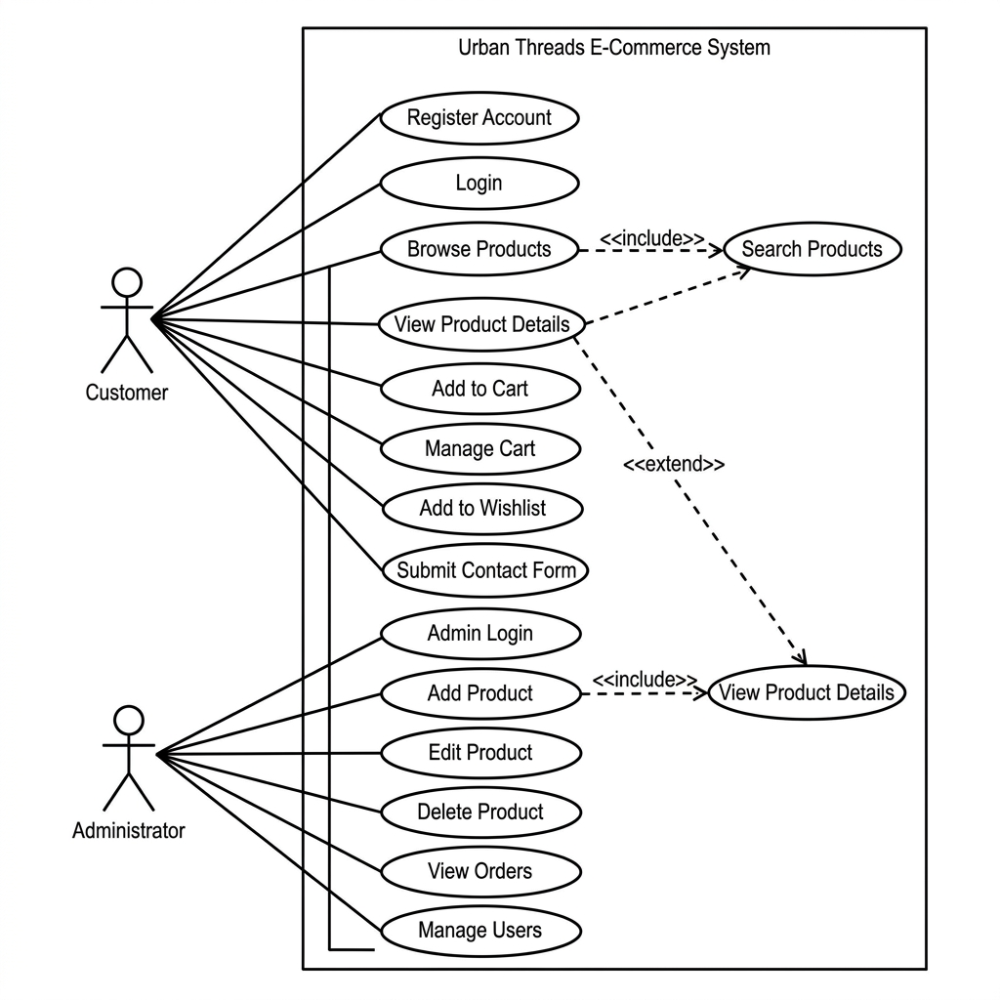
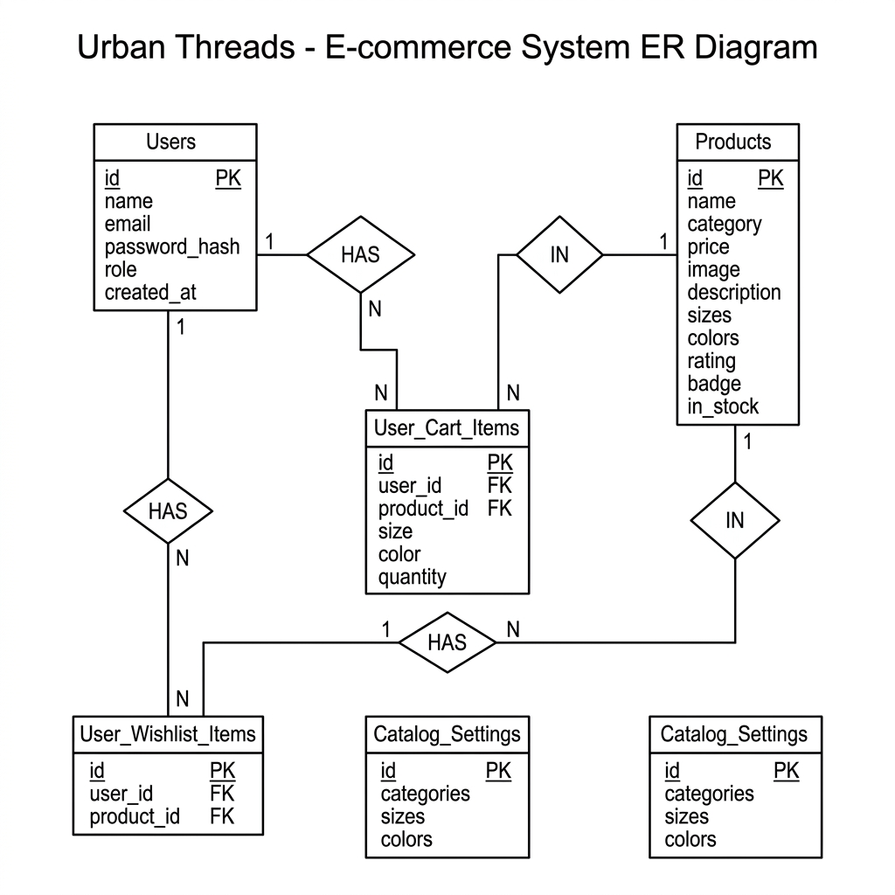

| Component | Development Machine | End User |
|---|---|---|
| Processor | Intel i5 / Apple M1 or above | Any modern processor |
| RAM | 8 GB minimum | 2 GB minimum |
| Storage | 256 GB SSD | No local storage needed |
| Display | 13" or larger monitor | Any screen size |
| Internet | Broadband (10 Mbps+) | Any internet connection |
| Input Devices | Keyboard and Mouse | Keyboard/Mouse/Touchscreen |
| Software | Version | Purpose |
|---|---|---|
| Node.js | 18.x or above | JavaScript runtime for backend |
| npm | 9.x or above | Package manager |
| Express.js | 4.18.x | Web application framework |
| Supabase | Latest (cloud) | Database, auth, and file storage |
| VS Code | Latest | Code editor / IDE |
| Git | 2.x | Version control system |
| Google Chrome | Latest | Primary browser for testing |
| Operating System | macOS / Windows / Linux | Development environment |
| Vercel CLI | Latest | Deployment tool |
| ID | Requirement | Description |
|---|---|---|
| FR01 | User Registration | Users can create accounts with name, email, and password. Email must be unique. Password is hashed before storage. |
| FR02 | User Login | Registered users can log in with email and password. JWT token returned on success for session management. |
| FR03 | Browse Products | Users can view all products or filter by category (Hoodies, Sneakers, T-Shirts, Jackets, Accessories). |
| FR04 | Search Products | Users can search products by name using keyword search with real-time results. |
| FR05 | Add to Cart | Logged-in users can add products to cart with selected size and quantity. |
| FR06 | Manage Cart | Users can update quantity, remove items, and view cart total in real-time. |
| FR07 | Add to Wishlist | Logged-in users can save products to their wishlist for later purchase. |
| FR08 | Contact Form | Users can submit a contact form with name, email, subject, and message. |
| FR09 | Admin Login | Admin can log in with special credentials to access the admin panel. |
| FR10 | Admin Product CRUD | Admin can add, edit, and delete products with image upload and category configuration. |
Urban Threads follows a three-tier client-server architecture separating the application into three distinct layers:
Presentation Layer (Frontend): HTML5, CSS3, and Vanilla JavaScript running in the user's browser. Responsible for rendering the UI and handling user interactions. Communicates with the backend through HTTP/HTTPS REST API calls.
Application Layer (Backend): Node.js runtime with Express.js framework. Handles business logic, request routing, authentication middleware, file upload processing, and API endpoint management.
Data Layer (Database): Supabase-hosted PostgreSQL database storing users, products, cart items, wishlist items, orders, and contact messages. Supabase Storage handles product image files.
Architecture Flow:
Browser (HTML/CSS/JS) → HTTP/HTTPS → Express.js Server (Node.js) → Supabase Client SDK → PostgreSQL Database + Supabase Storage
The context diagram shows the Urban Threads system as a single process with its interactions with two external entities — Customer and Administrator.

Fig. 6.1: Data Flow Diagram — Level 0 (Context Diagram)
The Level 1 DFD decomposes the single process from the context diagram into major sub-processes: User Authentication (1.0), Product Management (2.0), Cart Management (3.0), Wishlist Management (4.0), Contact Processing (5.0), and Admin Dashboard (6.0). Data stores include the Users Database, Products Database, Cart Database, and Contact Messages store.

Fig. 6.2: Data Flow Diagram — Level 1
The Level 2 DFD further decomposes the User Authentication process (Process 1.0) into six detailed sub-processes: Receive Credentials (1.1), Validate Input Format (1.2), Check Email Existence (1.3), Hash Password with bcrypt (1.4), Create User Record (1.5), and Generate JWT Token (1.6). It shows data stores D1 (Users Database) and D2 (Token Store), and includes error flows for invalid input and duplicate email scenarios.

Fig. 6.3: Data Flow Diagram — Level 2 (User Authentication Decomposition)
The Use Case Diagram identifies the two actors (Customer and Administrator) and their interactions with the Urban Threads system. The Customer can perform actions such as Register, Login, Browse Products, Search, Add to Cart, Manage Cart, Add to Wishlist, and Submit Contact Form. The Administrator can perform Admin Login, Add/Edit/Delete Products, View Orders, and Manage Users. The diagram includes <<include>> and <<extend>> relationships between related use cases.

Fig. 6.4: UML Use Case Diagram
| UC ID | Use Case | Actor | Description |
|---|---|---|---|
| UC-01 | Register | Customer | Create account with name, email, password |
| UC-02 | Login | Customer | Authenticate with email and password |
| UC-03 | Browse Products | Customer | View and filter product catalog by category |
| UC-04 | Search Products | Customer | Search by keyword (includes Browse) |
| UC-05 | Add to Cart | Customer | Add product with selected size to cart |
| UC-06 | Manage Cart | Customer | Update quantity, remove items, view total |
| UC-07 | Add to Wishlist | Customer | Save product for later purchase |
| UC-08 | Contact | Customer | Submit inquiry via contact form |
| UC-09 | Admin Login | Admin | Authenticate as administrator |
| UC-10 | Manage Products | Admin | Add, edit, delete products with images |
| UC-11 | View Orders | Admin | Review customer order history |
| UC-12 | Manage Users | Admin | View and manage registered users |
The ER Diagram shows the logical structure of the database including all entities (Users, Products, Cart_Items, Wishlist_Items, Orders, Contact_Messages), their attributes, and the relationships between them.

Fig. 6.5: Entity Relationship Diagram
Urban Threads is organized into seven distinct functional modules, each responsible for a specific aspect of the system's functionality. This modular design ensures separation of concerns and makes the application easier to maintain and extend.
This module handles user registration, login, session management, and access control. It is one of the most critical modules as it ensures the security of user data and controls access to protected features.
Protected routes use a middleware function that extracts the JWT token from the Authorization header (Bearer token format), verifies it using the JWT_SECRET environment variable, and attaches the decoded user information (userId, email, role) to the request object. If the token is missing, expired, or invalid, the middleware returns a 401 or 403 error response.
This module manages the display and discovery of products in the storefront. It handles product listing with a responsive grid layout, category-based filtering with five categories (Hoodies, Sneakers, T-Shirts, Jackets, Accessories), keyword search using case-insensitive ILIKE queries with debounced API calls, and detailed product pages with image gallery, description, available sizes, and pricing.
This module manages the user's shopping cart with the following functionality: adding items with product ID, selected size, and quantity (POST /api/cart), viewing all cart items with product details joined from the products table (GET /api/cart), updating item quantity with increment/decrement controls (PUT /api/cart/:id), removing items from the cart (DELETE /api/cart/:id), and real-time total calculation on the frontend. Cart data is stored in the cart_items database table and persists across sessions and devices for logged-in users. Duplicate items (same product and size) have their quantity incremented rather than creating new entries.
The wishlist module allows authenticated users to save products for future purchase. Users can add products to their wishlist, view all saved items, remove items they are no longer interested in, and move items from the wishlist directly to the shopping cart. A unique constraint on (user_id, product_id) prevents duplicate wishlist entries. The API endpoints are GET /api/wishlist, POST /api/wishlist, and DELETE /api/wishlist/:id.
The admin panel provides a comprehensive web-based dashboard for the store administrator, accessible at the /admin.html route. The admin panel includes:
This module provides a communication channel between users and administrators through a contact form with four fields: Name, Email Address, Subject, and Message. When submitted, the data is validated server-side and stored in the contact_messages database table. The admin can view all submitted messages through the admin panel. The API endpoint is POST /api/contact.
This module enhances product discovery through multiple mechanisms: text-based search using PostgreSQL ILIKE operator for case-insensitive matching, category filtering by selecting one of the five product categories, and the frontend constructs query parameters and sends them to /api/products with debounced API calls (300ms delay) for search to avoid excessive requests during typing.